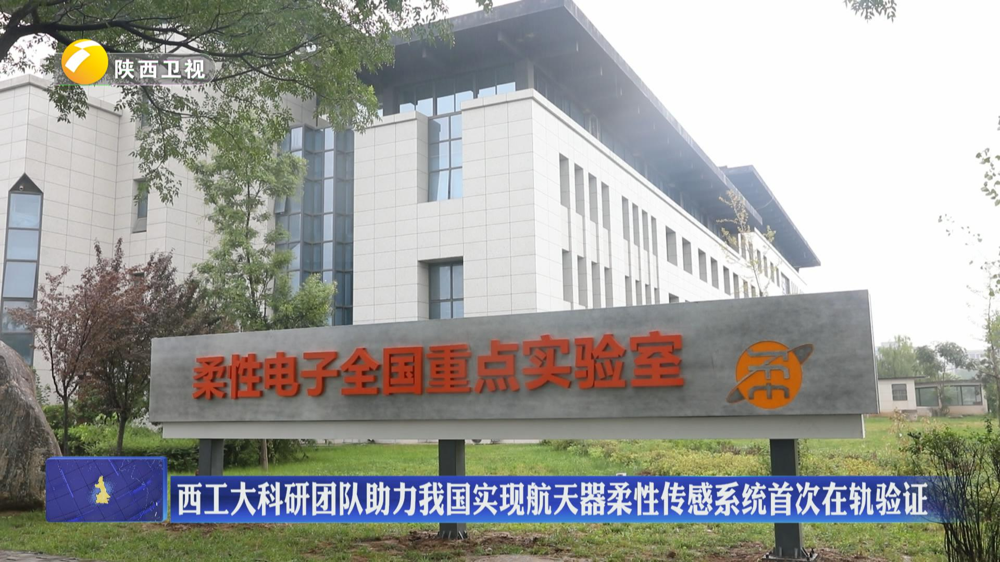

Qidian News Highlights the Team Behind China's First Flexible Sensing Space Validation
Qidian News focused on the contribution of the NPU research team to the mission and framed the work as a national milestone in spacecraft sensing. The report emphasizes collaborative engineering, the importance of reliable in-orbit feedback, and the role of flexible electronics in future space systems. It further presents the achievement as an example of how university-led research can directly support major aerospace missions and turn advanced sensing concepts into deployable technical capability.
Source: Shaanxi Media Convergence Group - Qidian News